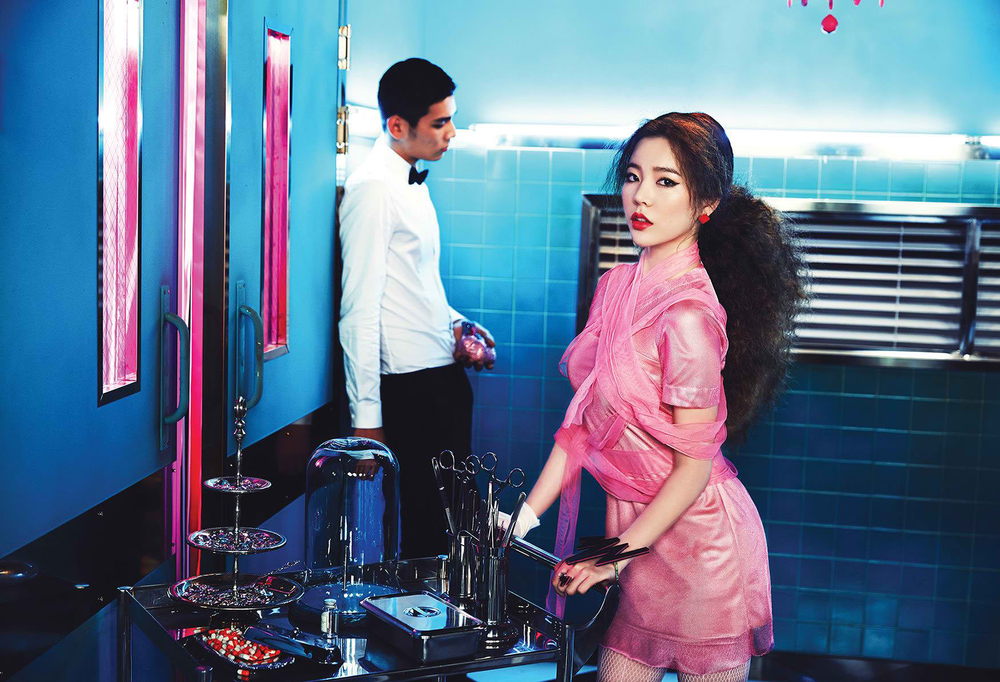

<!DOCTYPE html>
<html>
<head>

	<title></title>
	<link rel="stylesheet" type="text/css" href="memberStyle.css">

</head>
<body>

</body>
</html>

<div class="container">
	<div id="header">
		<font color="101010" size="60">0000000000000000000000</font>
		<a href="file:///home/eunice/Desktop/KIMBERLY OROZCO BSIS-2/index.html#section">MEMBERS</a><font color="101010">00</font>
		<a href=> SONGS</a><font color="101010">00</font>
		<a href=""> ALBUMS</a><font color="101010">00</font>
		<a href="">  ABOUT</a><font color="101010">0000</font>	
	</div>
	<br>
	<div id="member">
		<div id="section">
			<br>
		  	<div class="img">
			  <a target="_blank" href="taeyeon.html">
			 
			 </a>
			 </div>
				</div>
				<div id="name">Sunny</div><br><strong>
				Name: Lee Soon-kyu – Korean: 이순규<br>
				Birthday: May 15, 1989<br>
				Birthplace: Orange County, California, USA<br>
				Height: 155cm – Blood type: B</strong><br><br>

				Co-DJ of Chun Ji Radio (2007-2008)<br>
				Solo in You Don’t Know About Love – drama OST for Working Mom (2008)<br>
				Solo in Finally Now – movie OST for Story of Wine (2008)<br>
				Co-host of The M music show (2009-2010)<br>
				Duet with Taeyeon in It’s Love – drama OST for Heading To The Ground (2009)<br>
				Starred in reality-variety show Invincible Youth (2009-2010, sequel 2011-2012)<br>
				Solo in Your Doll – drama OST for Oh My Lady (2010)<br>
				Voice-acting in animated film Koala Kid: Birth of A Hero (2012)<br>
				Duet with Brown Eyed Girls’ Miryo in I Love You, I Love You (2012)<br>
				Starred in stage musical Catch Me If You Can (2012-2013)<br>
				Duet with f(x)’s Luna in It’s Me – drama OST for To The Beautiful You (2012)<br>
				Solo in The 2nd Drawer – drama OST for The Queen’s Classroom (2013)<br>
				Voice-acting in animated film Rio 2 (2014)<br>
				DJ for FM Date radio show (since 2014)<br>
				Starred in stage musical Singin’ in the Rain (2014)<br>
				Starred in reality-variety show It’s Okay, Roommate (2014-2015)<br>
	</div>
	<br>
	<div id="footer">
			Copyright &copy; 2016 girlsgeneration.com | Kimberly Orozco BSIS-2
	</div>

</div>